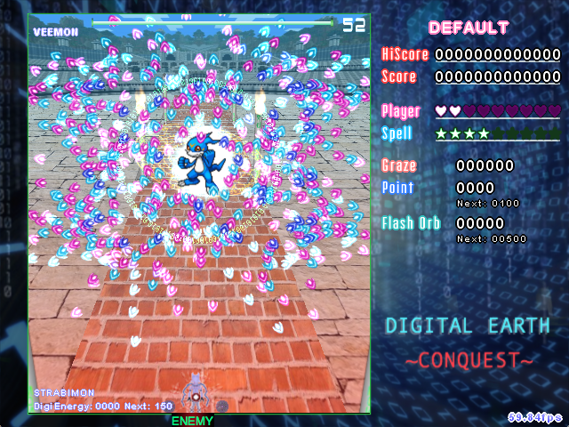

DIGITAL EARTH: CONQUEST
RELEASE INFORMATION
Release Date: May 2, 2015
Download: Download RC-9 (May 3, 2015)
Official Post: Archive MotK (Original Post)
Looking for other video playthroughs of this game? See Let's Play Danmakufu [38] by ExPorygon for a playthrough of RC-5, an incomplete version of the game.
GAMEPLAY AND SYNOPSIS
Similar to Touhou games, DEC is a standard 6 Stage + Extra Stage game with four base difficulties. Yet at the same time, it is so much more.
In DEC, you play as either Flamon or Strabimon (Rookie level Digimon from Digimon Frontier). The duo are entering a tourney which Digimon from across the Digital World are participating in, and they end up battling against some of the denizens of the Digital World. However, as they travel through forests, mountains, and beyond, they uncover the truth behind the tourney, and meet some new friends along the way.
DEC plays like a standard Touhou-esque game. It is a vertical 2D shmup featuring flashbombs (and deathbombs), replay and continue functionality, and more. It is intended to be enjoyable gameplay-wise for all players regardless of their familiarity with Digimon.
The main gimmick involves collecting DigiEnergy via grazing or by acquiring DigiEnergy packets, which allows Flamon and Strabimon to Digivolve up to two stages, upgrading their attacks in the process until they get hit and lose a life or dialogue/end of stage occurs. In the latter cases, which are primarily cosmetic (so as to only require dialogue portraits for Flamon and Strabimon and not their Digivolved forms as well), DigiEnergy will be refunded. The two player choices each have their own strengths and advantages, with Flamon being a spread focused character while Strabimon is a forward focus player. The blue items give double points to Strabimon, while the red items give double points to Flamon. Since items are key to getting extends (extra lives), it is advisable to use the point of collection (POC) or manually collect as many of them as possible. In addition to the other items mentioned, Flash Orbs are items similar to the Time Orbs of Imperishable Night. When you get enough of these, you will gain a flash bomb. You get them by damaging enemies unfocused. You will not gain any while bombing or focusing. Bombing will also attract all items on-screen to you. Depending on which character you choose, the Stage 4 boss changes, as is typical in earlier Touhou-esque games. The game also includes ExAttack Practice, which allows you to practice some of the attacks used by the various bosses similar to Spellcard Practice in standard Touhou games. More information on the game can be found in the ReadMe_DEC.rtf file.
Additionally, there is an in-game manual that explains some basic gameplay mechanics.
RELEASE POST
Note: This is a copy of the release post made on my release thread.
DIGITAL EARTH: CONQUEST HAS BEEN COMPLETED!
It's been a long year and 3 months. On February 3, 2014, I copied the first file from Danmakufu Dodging for Dummies into a brand new Digital Earth: Conquest folder, hopes high and mind set.
One year and three months later, this project has been realized to completion.
This project was not without pitfalls and periods of both hope and despair. I dealt with code I didn't understand, came face to face with both my and Danmakufu's limits, and had month-long periods of procrastination in which I decided that DEC was either too boring, not worth it, or sometimes, perhaps, just a piece of ****
I fought against myself and my own worries. Copyright issues, Doujin Guidelines, Resource Citation, and lack of willing testers were my enemies. But the biggest enemy was myself. But yet, I prevailed. I prevailed through seven stages full of hopes and dreams, and brought my ideas to life.
And while I may not consider this a worthy project... it is what it is, and without further ado, I present to you all...
Digital Earth: Conquest
To those who have helped me along the way, you have been immortalized in both the Credits Stage as well as the Credits file that comes with the game. And to my teachers, my testers, and my friends, I give you a big and honest Thank You from the bottom of my heart. Without all of you and the community that you have provided, this game would have died long ago. And indeed it did at certain times, but it was always revived, something that had to be completed.
This may not be a Touhou game, but that doesn't change the fact that it was inspired by Touhou. I hope that all of my players will find a fun attack, something interesting, or simply something that they like about this game, and I hope that all of you someday decide that it's worth playing.
To everyone, Thank You.
~~~Sparen of Iria/Andrew Fan, May 2, 2015
POSTMORTEM
DEC is a game of beautiful (although sometimes very hard) danmaku, challenge, and hopefully, fun. All music is from official Digimon sources, as I was unable to get original music, but in the end, it gives the characters more depth and personality than my poor attempt at dialogue ever could.
Digital Earth: Conquest was my first major Danmakufu ph3 project. Freed of the restrictions of 0.12m, I was able to go full force on literally everything, resulting in a game full of gorgeous (though simple) 3D backgrounds, plenty of amazing spellcards, and more. The overall quality of the danmaku in this game is quite high and a lot of work went into designing it. Compared to some later projects that suffered from overdesigned danmaku, the danmaku here tends to be more fluid and cohesive. Part of this is also likely due to the pacing of the game, which is rather fast paced.
There were many times I when wanted to give up on this game, but I am glad I didn't, and it's amazing to see how far I have come.
LEGAL AND CREDITS
Digimon is owned by Digimon (the company). Various resources in this game are not original - music comes from the Digimon Anime, Games, etc. All credits can be found in the game's credits roll, and general disclaimers can be found in the script/Digital Earth Conquest/ Credits.rtf file.
I do not and will not allow unauthorized redistribution of this game and/or use of original code/assets without express permission. This game is free and will remain so, but I prohibit parodies the game that use the original assets and/or code without express permission from the artist(s) and/or me, respectively.